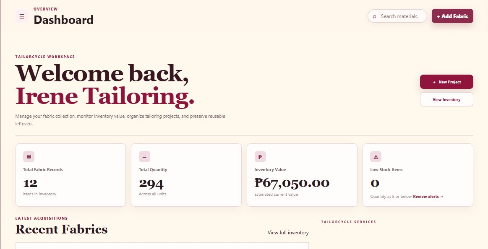

01 /
Front-end
Development
Practicing HTML, CSS, and JavaScript to build web pages and interactive interfaces through personal projects.
I'm a BSIT student exploring Front-end Development & UI/UX Design, passionate about creating thoughtful interfaces and turning ideas into meaningful digital experiences.
Hi! I'm Rachel, a Bachelor of Science in Information Technology student at Philippine Women's College of Davao. I enjoy exploring how design and technology come together to create useful digital experiences.
My journey began with BarangayConnect, my first mobile UI prototype in Figma. I continued developing my design skills through TriStock, a school project focused on a livestock marketplace interface.
As my interest in development grew, I started building TailorCycle, a personal website project where I practice creating web interfaces and exploring front-end development.
I'm still learning, experimenting, and improving with every project. I believe every small step is an opportunity to become a better designer and developer.
See what I can doA growing collection of skills I'm developing through school projects, personal experiments, and hands-on learning.
Practicing HTML, CSS, and JavaScript to build web pages and interactive interfaces through personal projects.
Creating mobile app interfaces, organizing user flows, and exploring interactive prototypes using Figma.
Learning to create adaptable layouts and improve how websites look and function across different screen sizes.
Three projects, each a step forward—from my first community app prototype to livestock marketplace UI and a personal web project.

A personal practice website for managing a tailoring workspace. The interface brings together a dashboard, fabric inventory records, stock monitoring, and tailoring workflows.
A livestock marketplace mobile app prototype. I worked on buyer and seller interfaces for browsing listings, viewing animal details, arranging delivery, and exploring payment, orders, and messaging flows.
My first UI/UX project, created when I was just starting to learn Figma. It’s a simple mobile app concept for helping residents access barangay information, request documents, explore community events, and track reports. This early prototype marks where my design journey began.
A selection of my school and personal learning projects. Mobile app concepts are Figma prototypes, while TailorCycle is a personal practice website.
HAVE AN IDEA IN MIND?
A project, a collaboration, or just a friendly hello — I'd love to hear from you.